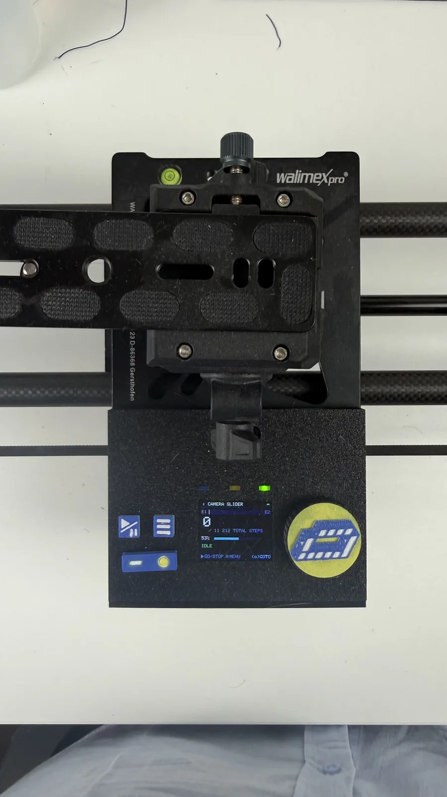

The slider's been pretty much done for a couple of days now. I'll reprint the power switch; the buttons I'll leave a bit janky for now — replacing them means taking everything apart again.
The strap mounts need some finishing work. But overall it's usable already.
Also put some work into the UI design, with a little help from Claude.

Comments